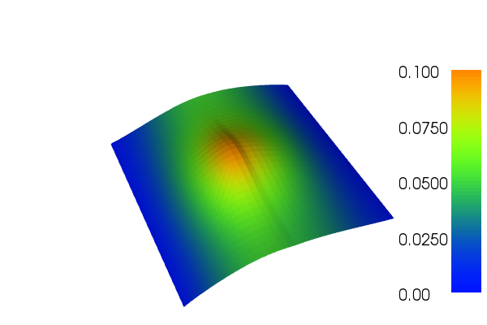

22. Tensor-weighted Poisson¶
This demo is implemented in two files; one file,
generate_data.py , for generating data, and one file,
demo_tensor-weighted-poisson.py , which contains both the
vaiational form and the solver.
This demo illustrates how to
- Import data from file
- Use complex user-defined JIT-compiled expressions
The solution \(u\) will look like this
{kind=link}
22.1. Equation and problem definition¶
The Poisson equation is the canonical elliptic partial differential equation. For a domain \(\Omega \subset \mathbb{R}^n\) with boundary \(\partial \Omega = \Gamma_{D} \cup \Gamma_{N}\), the Poisson equation with variational conductivity \(C\) and particular boundary conditions reads:
Here, \(f\) is input data and \(n\) denotes the outward directed boundary normal. The variational form of the Poisson equation reads: find \(u \in V\) such that
where \(V\) is a suitable function space and
The expression \(a(u, v)\) is the bilinear form and \(L(v)\) is the linear form. It is assumed that all functions in \(V\) satisfy the Dirichlet boundary conditions (\(u = 0 \ {\rm on} \Gamma_{D}\)).
In this demo, we shall consider the following definitions of the domain, the boundaries and the input function:
- \(\Omega = [0,1] \times [0,1]\) (a unit square)
- \(\Gamma_{D} = \{(0, y) \cup (1, y) \subset \partial \Omega\}\) (Dirichlet boundary)
- \(\Gamma_{N} = \{(x, 0) \cup (x, 1) \subset \partial \Omega\}\) (Neumann boundary)
- \(f = 10\exp(-((x - 0.5)^2 + (y - 0.5)^2) / 0.02)\) (source term).
The conductivity is a symmetric \(2 \times 2\) matrix which varies throughout the domain. In the left part of the domain the conductivity is
and in the right part it is
22.2. Implementation¶
22.2.1. Implementation of generate_data.py¶
First, the dolfin module is imported:
from dolfin import *
Then, we define a mesh of the domain. We use the built-in mesh,
provided by the class UnitSquareMesh. In order to create a mesh
consisting of \(32 \times 32\) squares with each square divided
into two triangles, we do as follows:
# Create mesh
mesh = UnitSquareMesh(32, 32)
Now, we create mesh functions to store the values of the conductivity
matrix as it varies over the domain. Since the matrix is symmetric,
we only create mesh functions for the upper triangular part of the
matrix. In MeshFunction
the first argument specifies the type of the mesh function, here we
use “double”. Other types allowed are “int”, “size_t” and “bool”.
The two following arguments are optional; the first gives the mesh the
MeshFunction is defined on,
and the second the topological dimension of the mesh function.
# Create mesh functions for c00, c01, c11
c00 = MeshFunction("double", mesh, 2)
c01 = MeshFunction("double", mesh, 2)
c11 = MeshFunction("double", mesh, 2)
To set the values of the mesh functions, we go through all the cells in the mesh and check whether the midpoint value of the cell in the \(x\)-direction is less than 0.5 or not (in practice this means that we are checking which half of the unit square the cell is in). Then we set the correct values of the mesh functions, depending on which half we are in.
# Iterate over mesh and set values
for cell in cells(mesh):
if cell.midpoint().x() < 0.5:
c00[cell] = 1.0
c01[cell] = 0.3
c11[cell] = 2.0
else:
c00[cell] = 3.0
c01[cell] = 0.5
c11[cell] = 4.0
Create files to store data and save to file:
# Store to file
mesh_file = File("../unitsquare_32_32.xml.gz")
c00_file = File("../unitsquare_32_32_c00.xml.gz")
c01_file = File("../unitsquare_32_32_c01.xml.gz")
c11_file = File("../unitsquare_32_32_c11.xml.gz")
mesh_file << mesh
c00_file << c00
c01_file << c01
c11_file << c11
Plot the mesh functions using the plot function:
# Plot mesh functions
plot(c00, title="C00")
plot(c01, title="C01")
plot(c11, title="C11")
interactive()
22.2.2. Implementation of tensor-weighted-poisson.py¶
This description goes through the implementation (in
demo_tensor-weighted-poisson.py ) of a solver for the above
described Poisson equation step-by-step.
First, the dolfin module is imported:
from dolfin import *
We proceed by defining a mesh of the domain and a finite element
function space \(V\) relative to this mesh. We read the mesh file
generated by generate_data.py and create the function
space in the following way:
# Read mesh from file and create function space
mesh = Mesh("../unitsquare_32_32.xml.gz")
V = FunctionSpace(mesh, "Lagrange", 1)
The second argument to FunctionSpace is the finite element family,
while the third argument specifies the polynomial degree. Thus, in
this case, our space V consists of first-order, continuous
Lagrange finite element functions (or in order words, continuous
piecewise linear polynomials).
Next, we want to consider the Dirichlet boundary condition. A simple Python function, returning a boolean, can be used to define the subdomain for the Dirichlet boundary condition (\(\Gamma_D\)). The function should return True for those points inside the subdomain and False for the points outside. In our case, we want to say that the points \((x, y)\) such that \(x = 0\) or \(x = 1\) are inside on the inside of \(\Gamma_D\). (Note that because of rounding-off errors, it is often wise to instead specify \(x < \epsilon\) or \(x > 1 - \epsilon\) where \(\epsilon\) is a small number (such as machine precision).)
# Define Dirichlet boundary (x = 0 or x = 1)
def boundary(x):
return x[0] < DOLFIN_EPS or x[0] > 1.0 - DOLFIN_EPS
Now, the Dirichlet boundary condition can be created using the class
DirichletBC. A
DirichletBC takes three
arguments: the function space the boundary condition applies to, the
value of the boundary condition, and the part of the boundary on which
the condition applies. In our example, the function space is
\(V\). The value of the boundary condition \((0.0)\) can be
represented using a Constant and the Dirichlet boundary is
defined immediately above. The definition of the Dirichlet boundary
condition then looks as follows:
# Define boundary condition
u0 = Constant(0.0)
bc = DirichletBC(V, u0, boundary)
Before we define the conductivity matrix, we create a string
containing C++ code for evaluation of the conductivity. Later we will
use this string when we create an Expression containing the entries of the
matrix.
# Code for C++ evaluation of conductivity
conductivity_code = """
class Conductivity : public Expression
{
public:
// Create expression with 3 components
Conductivity() : Expression(3) {}
// Function for evaluating expression on each cell
void eval(Array<double>& values, const Array<double>& x, const ufc::cell& cell) const
{
const uint D = cell.topological_dimension;
const uint cell_index = cell.index;
values[0] = (*c00)[cell_index];
values[1] = (*c01)[cell_index];
values[2] = (*c11)[cell_index];
}
// The data stored in mesh functions
std::shared_ptr<MeshFunction<double> > c00;
std::shared_ptr<MeshFunction<double> > c01;
std::shared_ptr<MeshFunction<double> > c11;
};
"""
We define the conductivity matrix by first creating mesh functions
from the files we stored in generate_data.py. Here, the
third argument in MeshFunction is the path to the data files. Then,
we define an expression for the entries in the matrix where we give
the C++ code as an argument for optimalization. Finally, we use the
UFL function as_matrix to create the matrix consisting of the
expressions.
# Define conductivity expression and matrix
c00 = MeshFunction("double", mesh, "../unitsquare_32_32_c00.xml.gz")
c01 = MeshFunction("double", mesh, "../unitsquare_32_32_c01.xml.gz")
c11 = MeshFunction("double", mesh, "../unitsquare_32_32_c11.xml.gz")
c = Expression(cppcode=conductivity_code)
c.c00 = c00
c.c01 = c01
c.c11 = c11
C = as_matrix(((c[0], c[1]), (c[1], c[2])))
Next, we want to express the variational problem. First, we need to
specify the trial function \(u\) and the test function \(v\),
both living in the function space \(V\). We do this by defining a
TrialFunction and
a TestFunction on
the previously defined FunctionSpace \(V\).
Further, the source \(f\) is involved in the variational form, and
hence it must be must specified. Since \(f\) is given by a simple
mathematical formula, it can easily be declared using the
Expression class. Note
that the string defining \(f\) uses C++ syntax since, for
efficiency, DOLFIN will generate and compile C++ code for these
expressions at run-time.
With these ingredients, we can write down the bilinear form \(a\) and the linear form \(L\) (using UFL operators). In summary, this reads:
# Define variational problem
u = TrialFunction(V)
v = TestFunction(V)
f = Expression("10*exp(-(pow(x[0] - 0.5, 2) + pow(x[1] - 0.5, 2)) / 0.02)")
a = inner(C*grad(u), grad(v))*dx
L = f*v*dx
Now, we have specified the bilinear and linear forms and can consider
the solution of the variational problem. First, we need to define a
Function u to
represent the solution. (Upon initialization, it is simply set to the
zero function.) A Function
represents a function living in a finite element function space.
Next, we can call the solve function with
the arguments a == L, u and bc as follows:
# Compute solution
u = Function(V)
solve(a == L, u, bc)
The function u will be modified during the call to solve. The
default settings for solving a variational problem have been used.
However, the solution process can be controlled in much more detail if
desired.
A Function can be
manipulated in various ways, in particular, it can be plotted and
saved to file. Here, we output the solution to a VTK file (using the
suffix .pvd) for later visualization and also plot it using the
plot command:
# Save solution in VTK format
file = File("poisson.pvd")
file << u
# Plot solution
plot(u, interactive=True)
22.3. Complete code¶
demo_tensor-weighted-poisson.py:
from dolfin import *
# Read mesh from file and create function space
mesh = Mesh("../unitsquare_32_32.xml.gz")
V = FunctionSpace(mesh, "Lagrange", 1)
# Define Dirichlet boundary (x = 0 or x = 1)
def boundary(x):
return x[0] < DOLFIN_EPS or x[0] > 1.0 - DOLFIN_EPS
# Define boundary condition
u0 = Constant(0.0)
bc = DirichletBC(V, u0, boundary)
# Code for C++ evaluation of conductivity
conductivity_code = """
class Conductivity : public Expression
{
public:
// Create expression with 3 components
Conductivity() : Expression(3) {}
// Function for evaluating expression on each cell
void eval(Array<double>& values, const Array<double>& x, const ufc::cell& cell) const
{
const uint D = cell.topological_dimension;
const uint cell_index = cell.index;
values[0] = (*c00)[cell_index];
values[1] = (*c01)[cell_index];
values[2] = (*c11)[cell_index];
}
// The data stored in mesh functions
std::shared_ptr<MeshFunction<double> > c00;
std::shared_ptr<MeshFunction<double> > c01;
std::shared_ptr<MeshFunction<double> > c11;
};
"""
# Define conductivity expression and matrix
c00 = MeshFunction("double", mesh, "../unitsquare_32_32_c00.xml.gz")
c01 = MeshFunction("double", mesh, "../unitsquare_32_32_c01.xml.gz")
c11 = MeshFunction("double", mesh, "../unitsquare_32_32_c11.xml.gz")
c = Expression(cppcode=conductivity_code)
c.c00 = c00
c.c01 = c01
c.c11 = c11
C = as_matrix(((c[0], c[1]), (c[1], c[2])))
# Define variational problem
u = TrialFunction(V)
v = TestFunction(V)
f = Expression("10*exp(-(pow(x[0] - 0.5, 2) + pow(x[1] - 0.5, 2)) / 0.02)")
a = inner(C*grad(u), grad(v))*dx
L = f*v*dx
# Compute solution
u = Function(V)
solve(a == L, u, bc)
# Save solution in VTK format
file = File("poisson.pvd")
file << u
# Plot solution
plot(u, interactive=True)
generate_data.py:
from dolfin import *
# Create mesh
mesh = UnitSquareMesh(32, 32)
# Create mesh functions for c00, c01, c11
c00 = MeshFunction("double", mesh, 2)
c01 = MeshFunction("double", mesh, 2)
c11 = MeshFunction("double", mesh, 2)
# Iterate over mesh and set values
for cell in cells(mesh):
if cell.midpoint().x() < 0.5:
c00[cell] = 1.0
c01[cell] = 0.3
c11[cell] = 2.0
else:
c00[cell] = 3.0
c01[cell] = 0.5
c11[cell] = 4.0
# Store to file
mesh_file = File("../unitsquare_32_32.xml.gz")
c00_file = File("../unitsquare_32_32_c00.xml.gz")
c01_file = File("../unitsquare_32_32_c01.xml.gz")
c11_file = File("../unitsquare_32_32_c11.xml.gz")
mesh_file << mesh
c00_file << c00
c01_file << c01
c11_file << c11
# Plot mesh functions
plot(c00, title="C00")
plot(c01, title="C01")
plot(c11, title="C11")
interactive()